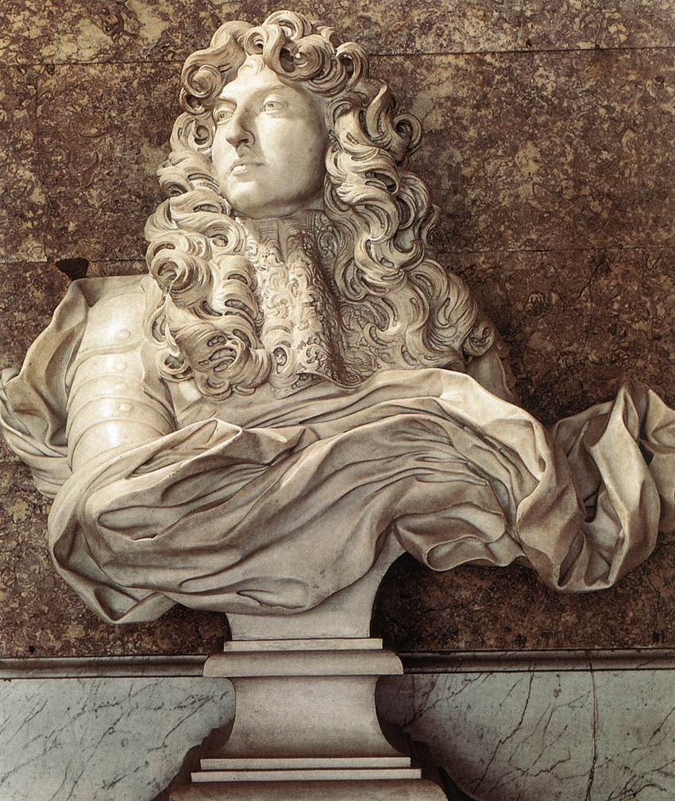
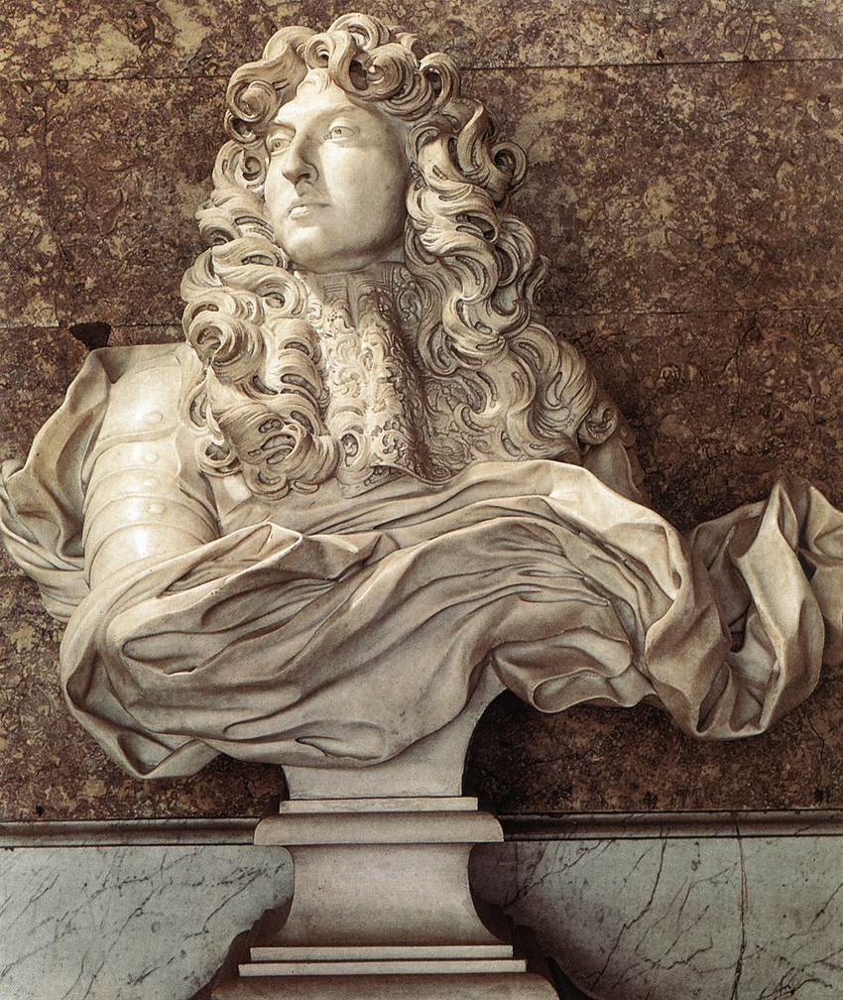

Gian Lorenzo Bernini
A major figure in the world of architecture, he was the leading sculptor of his age, credited with creating the Baroque style of sculpture. As one scholar has commented, "What Shakespeare is to drama, Bernini may be to sculpture: the first pan-European sculptor whose name is instantaneously identifiable with a particular manner and vision, and whose influence was inordinately powerful..." In addition, he was a painter (mostly small canvases in oil) and a man of the theater: he wrote, directed and acted in plays (mostly Carnival satires), also designing stage sets and theatrical machinery, as well as a wide variety of decorative art objects including lamps, tables, mirrors, and even coaches. As architect and city planner, he designed both secular buildings and churches and chapels, as well as massive works combining both architecture and sculpture, especially elaborate public fountains and funerary monuments and a whole series of temporary structures (in stucco and wood) for funerals and festivals.
 
